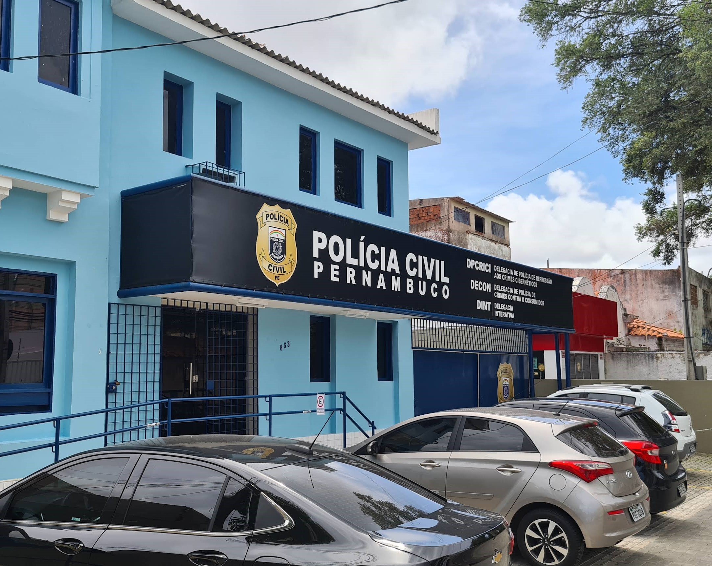

Guias rápidos e fáceis para ajudar você a se manter seguro
na Região Metropolitana do Recife.

Saiba como identificar as principais fraudes e como se prevenir.
Ver Guia CompletoAprenda o passo a passo para recuperar sua conta do Instagram ou WhatsApp e a torná-la mais segura.
Ver Guia CompletoDescubra como identificar mensagens e sites perigosos que tentam roubar seus dados pessoais.
Ver Guia CompletoOs dados abaixo foram coletados em nossa pesquisa com 26 moradores da RMR,
mostrando por que a segurança na internet é um assunto urgente para todos.
dos entrevistados já foram
vítimas ou conhecem alguém
que sofreu um golpe
afirmaram não saber
exatamente como registrar
uma denúncia oficial
classificaram como "Difícil" ou "Muito
Difícil" encontrar a informação
correta nos canais oficiais.

A Delegacia de Polícia de Repressão aos Crimes Cibernéticos (DPCRICI) é o órgão oficial em Pernambuco para investigar golpes na internet. Este guia centraliza as informações para facilitar seu contato com eles e o registro de denúncias.
Saber Mais sobre a Delegacia